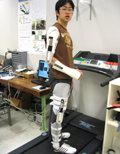
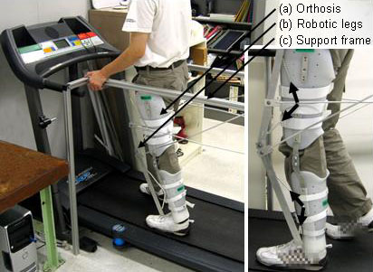

Current Projects
Past Projects
Advanced Vehicle Control Systems
Copier Paperpath Control
Disk Drive Control
Intelligent Machining
ILP Summary '96-'97
 Human Mechatronics
Human Mechatronics
-->Human Assistive Systems: Bio-Mechatronics
-->Intelligent Power Assist Systems Auto-Adaptive to Varying Human Characteristics and Environmental Conditions
-->Intelligent Power Assist Steering System
Human Assistive Systems: Bio-Mechatronics
Introduction
| Research
| Technical Objectives
| Related Publications
| More Publications
| Researchers

This research studies fundamental issues in the development of advanced sensing technologies for mobile assistive devices. We are developing a simple yet reliable means to identify the motion phases of gait including abnormalities in swing, single foot stance, step length, push off and weight distribution. The smart assistive device will utilize the identified results to assist elderly and patients in improved efficiency, effectiveness and safety in walking. Identification of the motion phases is achieved by measuring the grand contact forces (GCF).

In this research, we developed new sensing methods for GCF (e.g. Smart shoes), new analysis and recognition methods of the phases of human motion, and the integration of sensors in assistive devices. The developed analysis and recognition method has the following capabilities: 1) identification of the phases of human motion, 2) quantification of the abnormality of a patient¡¯s gait, and 3) estimation of the human joint torques for the feedback control of assistive devices. The effectiveness of motion phase identification are being evaluated on human subjects who exhibit a normal gait as well as those with an abnormal gait. Identified results are to be utilized in a variety of ways such as providing feedback information to patients to help them resume a normal gait.

We have developed prototype orthoses to assist patients as a part of this research. The developed devices utilize an innovative idea of flexible joint actuation for precise torque control.

Active assistive system

Passive assistive system

The technical objectives of this research are as follows:
- Establish methodologies to identify gait phases and detect abnormal gaits based on ground contact force measurements and verify them in a clinical environment.
- Devise schemes to evaluate patients in a clinical setting, to provide feedback to patients to make them aware of potentially hazardous situations (e.g. physiological side effects such as wear on hip joint bones) due to their abnormal gait, and to use the feedback to facilitate normal gait.
- Establish a signal processing and feedback control methodology based on the ground contact force measurement for active orthoses and exoskeletons and demonstrate their effectiveness with experiments challenging stability.

On Design and Control of Wearable Robots
-
K. Kong and M. Tomizuka, "Control of Exoskeletons Inspired by Fictitious Variable Gain in Human," IEEE/ASME Transactions on Mechatronics, in preparation.
Journal | Abstract | HTML | PDF -
K. Kong and M. Tomizuka, "Control of Exoskeletons Inspired by Fictitious Variable Gain in Human," Proc. of the ASME Dynamic Systems and Control Conference, accepted, 2008.
Conference | Abstract | HTML | PDF
On Health Monitoring System
-
K. Kong and M. Tomizuka, "Gait Monitoring System Based on Sensor-Embedded Shoes," IEEE/ASME Transactions on Mechatronics, under review.
Journal | Abstract | HTML | PDF -
K. Kong and M. Tomizuka, "Smooth and Continuous Human Gait Phase Detection Based on Foot Pressure Patterns," Proc. of the IEEE International Conference on Robotics and Automation (ICRA2008), pp. 3678-3683, 2008.
Conference | Abstract | HTML | PDF -
K. Kong, J. Bae and M. Tomizuka, "Detection of Abnormalities in a Human Gait Using Smart Shoes," Proc. of the SPIE Smart Structures/NDE, 2008.
-
K. Kong and M. Tomizuka, "Estimation of Abnormalities in a Human Gait Using Sensor-Embedded Shoes," Proc. of the IEEE/ASME International Conference on Advanced Intelligent Mechatronics (AIM2008), pp. 1331-1336, 2008.
-
K. Kong, "Human Motion Phase Detection Based on Ground Contact Force Measurement," Proc. of the US-Japan Workshop on Advanced Integrated Sensor Technologies for Safe and Secure Societies and Better Quality of Life, Japan, 2007.
Conference | Abstract | HTML | PDF
On Actuator Impedance Compensation
-
K. Kong, J. Bae and M. Tomizuka, "Control of Flexible Joint Actuator for Ideal Force Mode Actuation in Human-Robot Interaction Applications," IEEE/ASME Transactions on Mechatronics, accepted.
Journal | Abstract | HTML | PDF -
K. Kong and M. Tomizuka, "Flexible Joint Actuator for Patient¡¯s Rehabilitation Devices," Proc. of the IEEE International Symposium on Robot and Human Interactive Communication (RO-MAN2007), pp. 1179-1184, 2007.
-
K. Kong, J. Bae and M. Tomizuka, "Impedance Compensation of Flexible Joint Actuator for Ideal Force Mode Control," Proc. of the17th IFAC World Congress, accepted, 2008.
Conference | Abstract | HTML | PDF -
K. Kong, J.Bae and M. Tomizuka, "Biologically Inspired Actuator for Human-Robot Interaction," Proc. of the International Symposium on Flexible Automation, pp. 2442-2447, 2008.
Conference | Abstract | HTML | PDF -
K. Kong, M. Tomizuka, H. Moon, B. Hwang and D. Jeon, "Mechanical Design and Impedance Compensation of SUBAR (Sogang University's Biomedical Assist Robot)," Proc. of the IEEE/ASME International Conference on Advanced Intelligent Mechatronics (AIM2008), pp. 377-382, 2008.
On Control Systems
-
K. Kong, K. Inaba and M. Tomizuka, "Real-Time Nonlinear Programming by Amplitude Modulation," Proc. of the ASME Dynamic Systems and Control Conference, accepted, 2008.
Conference | Abstract | HTML | PDF
On Design and Control of Wearable Robots
-
K. Kong and D. Jeon, "Design and Control of an Exoskeleton for the Elderly and Patients," IEEE/ASME Transactions on Mechatronics, Vol.11, No.4, pp. 936-942, 2006.
-
K. Kong and D. Jeon, "Design and Control of a Novel Tendon-Driven Exoskeletal Power Assistive Device," Journal of Control, Automation and Systems Engineering, Vol.11, No.11, 2005.
Journal | Abstract | HTML | PDF -
K. Kong and D. Jeon, "Fuzzy Control of a New Tendon-Driven Exoskeletal Power Assistive Device," Proc. of the IEEE/ASME International Conference on Advanced Intelligent Mechatronics, pp. 146-151, 2005.
Best Student Paper Finalist | Conference | Abstract | HTML | PDF -
K. Kong and D. Jeon, "Design and Control of a New Tendon-Driven Exoskeletal Lower Body Power Assistive Device," Proc. of the ASME International Mechanical Engineering Congress and Exposition, 2005.
Conference | Abstract | HTML | PDF -
K. Kong and D. Jeon, "New Design of Tendon-Driven Exoskeletal Assistive Device," Proc. of the KSME (Korean Society of Mechanical Engineering) Spring Conference, 2005.
Conference | Abstract | HTML | PDF -
K. Kong and D. Jeon, "A Study on the Control of a New Tendon-Driven Exoskeletal Power Assistive Device," Proc. of the KSME (Korean Society of Mechanical Engineering) Spring Conference, 2005.
Conference | Abstract | HTML | PDF
On Biopsy Device for Capsule Endoscopes
-
K. Kong, J. Cha, D. Jeon, and D. Cho, "A Rotational Micro Biopsy Device for the Capsule Endoscope," Proc. of the IEEE/RSJ International Conference on Intelligent Robotics and Systems (IROS), pp. 3057-3061, 2005.
Conference | Abstract | HTML | PDF -
K. Kong and D. Jeon, "Design of a Biopsy Module for the Capsule Type Endoscope," Proc. of the ASME International Mechanical Engineering Congress and Exposition, 2005.
Conference | Abstract | HTML | PDF -
K. Kong, J. Cha, D. Jeon, and D. Cho, "A Micro Biopsy Device for the Capsule Endoscope," Proc. of the KSME (Korean Society of Mechanical Engineering) Spring Conference, pp. 1244-1248, 2005.
Conference | Abstract | HTML | PDF
On Seat Suspension System
-
K. Kong and D. Jeon, "Fuzzy Control of the Seat Suspension System Considering the Acceleration of a Driver's Head," Journal of Control, Automation, and Systems Engineering, Vol.11, No.7, pp. 572-577, 2005.
Journal | Abstract | HTML | PDF -
K. Kong, G. Lee, and D. Jeon, "Fuzzy Control of a Seat Suspension System with an MR Damper," the 9th International Conference of ER and MR Fluids, 2004.
Conference | Abstract | HTML | PDF -
D. Jeon and K. Kong, "Fuzzy Control of a Seat Suspension System with an MR Damper," Proc. of the KSME (Korean Society of Mechanical Engineering) Fall Conference, pp. 619-624, 2004.
Best Paper Award | Conference | Abstract | HTML | PDF
On Control Systems
-
K. Kong and D. Jeon, "A Study on the Control of a Linear Motor System of the Universal Machining Center," Proc. of the KSPE (Korean Society of Precision Engineering) Annual Conference, 2005.
Conference | Abstract | HTML | PDF